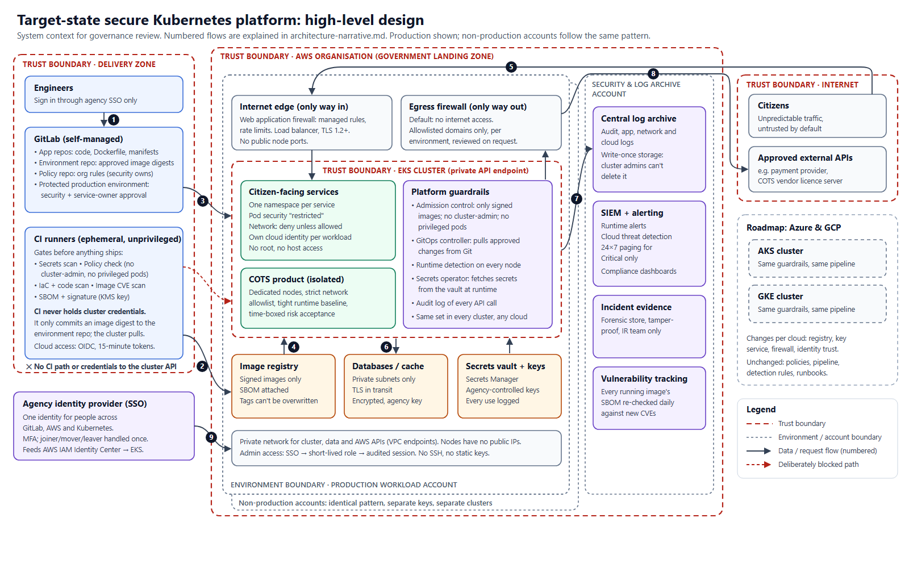
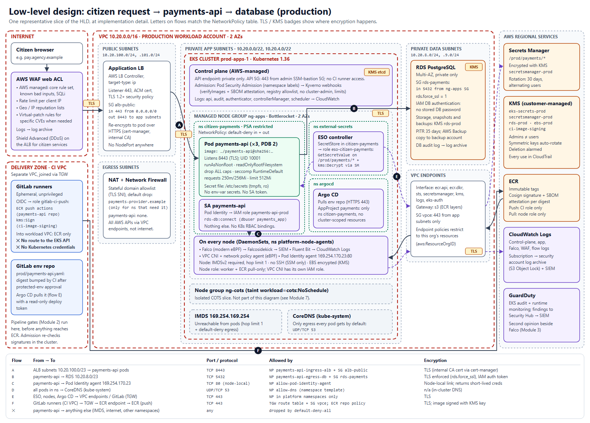

DevSecOps technical assessment · Track 1
Srikar Adusumilli
Repository: github.com/adusumillisrikar/k8s-container-security-assessment
Today
Fix 10 go-live blockers (about 12 engineer-days) and put in four platform controls that close most of the remaining risk for every workload at once.
Accept the vendor container at Medium residual risk with compensating controls, signed by the system owner, endorsed by the ITSO, for 6 months with a funded exit plan.
Does the data classification allow a second-region DR copy? It changes the regional recovery answer from "accepted risk" to "about 8 hours".
1. Where we stand and why
2. The design as one story
3. Architecture and the COTS decision
4. The first 90 days
Executive summary
CriticalHighMediumLow
10 go-live blockers, about 12 engineer-days to close.
Most of the rest close with 4 platform controls rather than app-by-app work.
How findings were prioritised
| Impact | Meaning |
|---|---|
| 4 | Whole cluster, a node and its cloud identity, the control plane |
| 3 | Many workloads, a namespace, or credentials usable elsewhere |
| 2 | One workload |
| 1 | Hygiene |
| Exploitability | Who can reach it |
|---|---|
| 4 | Anyone on the internet |
| 3 | Any pod, anyone who can run a CI job or pull an image |
| 2 | Needs a specific foothold |
| Fix window | Meaning |
|---|---|
| P0 | Blocks go-live. No risk acceptance offered. |
| P1 | Fix, or go live with a compensating control and a signed acceptance |
| P2 / P3 | Owned backlog, reviewed monthly |
Top findings
F-01
The audit-finding pattern. Anyone who can run a pipeline holds the master key.
F-02
Privileged pod with the host disk mounted and a terminal with no password.
F-03
Command injection in a pod that holds the container engine's socket.
F-04
Grants */*/* to the default identity most pods use.
A · CI to cluster
Pipeline (F-01) + no audit log (F-16) = full control, no trace.
B · Any pod to node to cluster
Flat network (F-12) → web shell (F-02) → node → tokens of every pod on it.
C · Internet to cloud keys
Exposed debug app (F-10) + SSRF (F-09) → node's cloud credentials (F-19).
Tested, not just designed
| Run against kubernetes-goat's real ClusterRoleBinding | Result | What it means |
|---|---|---|
| Our Conftest policy (pre-merge gate) | Blocked | [F-01] ClusterRoleBinding/superadmin binds cluster-admin |
| Our Kyverno policy (admission) | Blocked | Refused at the API server, however it arrives |
| Checkov (generic catalogue) | Not flagged | Its RBAC checks read role contents; cluster-admin is built in |
| Trivy (generic catalogue) | Medium | Passes a typical "fail on High/Critical" gate |
Scanners run pinned by digest, with no network and read-only inputs, after the 2026 Trivy/KICS image compromises. Evidence: 01-findings/evidence/
The design as one story
Pipeline gates + admission control. Signed images only. CI holds no cluster credentials: the cluster pulls approved changes from Git.
Default-deny network. One cloud identity per workload. Secrets fetched at runtime, never in Git or images.
Audit log + runtime detection to a write-once archive. Contain without destroying evidence.
| Attacker step | Stopped by |
|---|---|
| Deploy a privileged pod with the host disk mounted | Prevent: refused at merge (Conftest) and at the API server (Pod Security restricted) |
| From a compromised pod, reach another app's web shell | Contain: default-deny NetworkPolicy drops the connection |
| Read a service-account token or call the node's metadata service | Detect: Falco rules alert; token isn't mounted; IMDS hop limit blocks the call |
Shift-left and supply chain
| Gate | Mode |
|---|---|
| Secrets (gitleaks) | Hard |
| Org policy: cluster-admin, privileged, hostPath, unpinned images (Conftest) | Hard |
| IaC: public endpoint, logging, encryption (curated Checkov list) | Hard |
| Code: shell injection, SSRF, debug mode (Semgrep + org rules) | Hard |
| Fixable Critical CVEs, any secret in an image (Trivy) | Hard |
| runAsNonRoot, read-only FS, High CVEs | Warn → hard in 60 days |
| Reliability hints (kube-score) | Advisory |
Zero-trust networking and identity
For: mTLS everywhere, L7 authorisation, uniform across clouds.
Against, now: it lands on a stretched team; sidecars are a risk for the COTS image; none of the Critical findings is fixed by a mesh.
Revisit in 2 quarters if: the standard requires in-cluster mTLS, service-to-service calls outgrow IP rules, or AKS/GKE need one story. Then Istio ambient (no sidecars).
Runtime detection and incident response
| 1 | Capture first (memory checkpoint, filesystem diff, logs), from outside the container |
| 2 | Relabel the pod: it leaves the Service, a clean replica starts, a pre-staged policy isolates it |
| 3 | Cordon, don't drain the node; swap it to a forensic security group |
| 4 | Revoke and rotate every credential the pod and node could reach |
| 5 | Replace, don't clean: rebuild from Git at signed digests |
High-level design (governance view)

Low-level design: citizen request → payments-api → database

Decision 1 · COTS product
Assumed gap: end-of-life base OS with unfixable CVEs, runs as root, needs a writable filesystem. Vendor won't rebuild without a paid contract.
| Rating | |
|---|---|
| Inherent | High |
| Residual, with controls | Medium |
Decision 2 · Resilience
| payments-api: failure | RPO | RTO |
|---|---|---|
| Pod / node | 0 | < 1 min |
| One availability zone | 0 | < 5 min |
| Cluster loss, including compromise | ≤ 5 min | ≤ 2 h |
| Data corruption | ≤ 5 min | ≤ 4 h |
| Whole region | Your decision → | |
The first 90 days
restricted, time to detect a test binding, and measured rebuild time against the 2-hour target.Summary
10 blockers before go-live, then the four platform controls, in the 90-day order shown.
Medium residual risk, accepted by the system owner and endorsed by the ITSO, for 6 months.
Second-region DR copy allowed for payments data, or regional loss accepted and documented.
Questions
github.com/adusumillisrikar/k8s-container-security-assessment